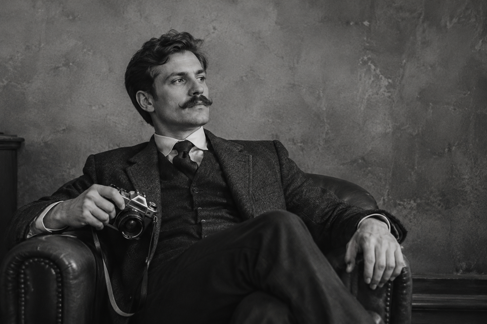

Mustachio is a website created for people who appreciate the style, character, and personality that comes with a great mustache. From classic looks to bold and creative styles, we believe every mustache has its own story to tell.
Our goal is to celebrate the mustache in all its different forms and show that facial hair can be a unique part of someone's identity and personal style.
Whether you're already a proud mustache enthusiast or you're simply curious about different mustache styles, you've come to the right place. Here, you can explore different looks, learn more about mustache styles, and find inspiration for your own.
It all started with a simple appreciation for mustaches. What began as an interest in different styles grew into a place where mustache lovers could come together and share that passion.
We believe that a great mustache doesn't have to follow a particular trend. It can be short, long, thick, thin, classic, or completely unique. What matters is wearing it with confidence.
A mustache is more than just facial hair. For many people, it is a way to express themselves and stand out from the crowd. Different styles can give completely different personalities and appearances.
At Mustachio, we celebrate that variety. So whether you are looking for inspiration, learning about different styles, or simply enjoying the art of the mustache, we hope you find something you like.
Take a look around Mustachio and discover the world of mustaches. Find a style that catches your attention, get inspired, and most importantly, have fun with it.